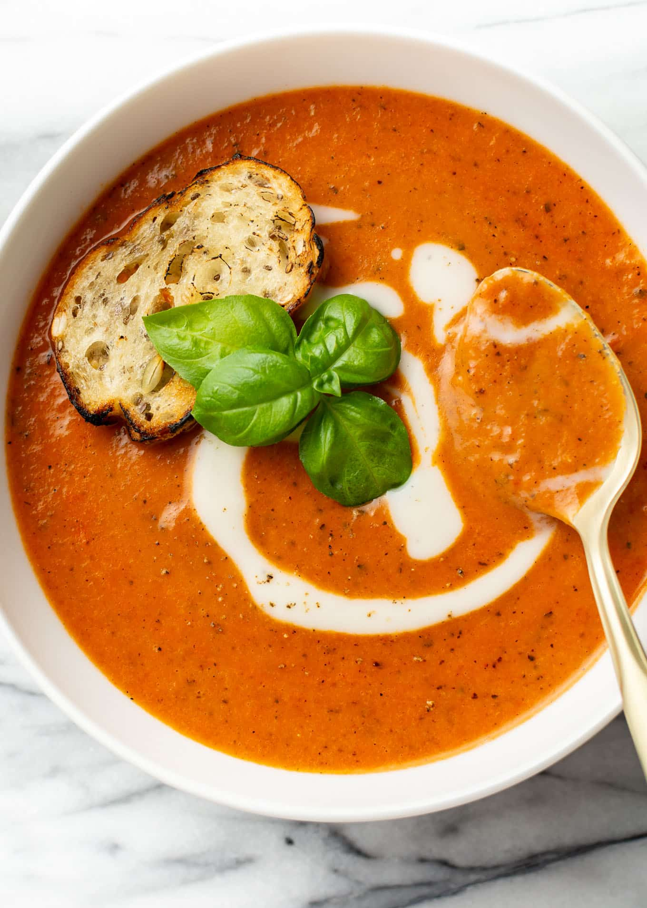

Tomato Soup Recipe

Tomato Soup is a great lunch item to enjoy if you want something both
tasty and easy to make.
With the total time to make only taking around 30-35 minutes, this food
item is a no brainer, especially if you want to feed multiple people aswell.
Ingredients
- 4 cups chopped fresh tomatoes
- 2 cups chicken broth
- 4 cloves garlic
- 1 large slice of onion
- 2 tablespoons butter
- 2 tablespoons all-purpose flour
- 2 teaspoons white sugar, or to taste
- 1 teaspoon salt, or to taste
Steps
- Boil the tomatoes, onion, garlic, and broth.
- Run the mixture through a food mill into a large bowl.
- Make a roux.
- Add the tomato mixture and season.